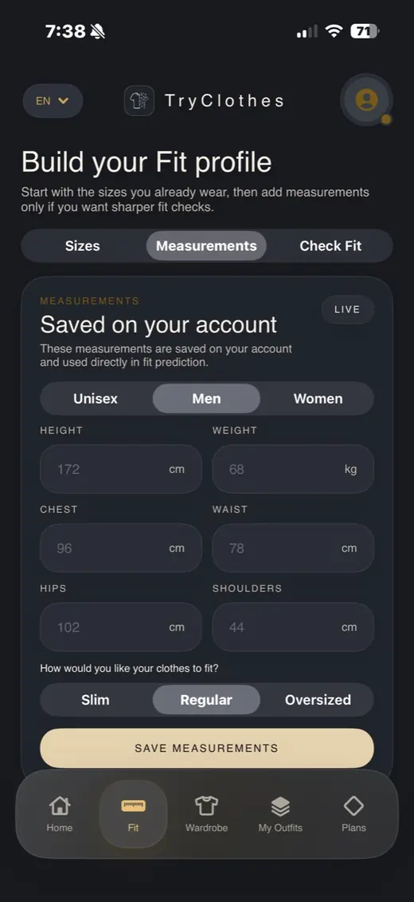

Proporții și fit
TryClothes pune accent pe forma corpului și pe felul în care o ținută ar trebui să se așeze vizual.
Virtual fitting room
TryClothes duce experiența de fitting room pe telefon: în loc să ghicești dacă o haină îți vine bine, poți vedea un preview al ținutei pe corpul tău și poți compara variantele înainte de comandă.

Realism
Un filtru poate arăta interesant câteva secunde. O probă virtuală bună trebuie să te ajute să iei o decizie: se potrivește croiala, arată bine culoarea, merită ținuta comandată sau nu?
TryClothes pune accent pe forma corpului și pe felul în care o ținută ar trebui să se așeze vizual.
O probă virtuală credibilă trebuie să respecte contextul imaginii, nu doar să coloreze o zonă din fotografie.
Poți compara mai multe outfit-uri și poți păstra doar opțiunile care se potrivesc stilului tău.
Pentru cine
TryClothes este pentru oamenii care cumpără haine online, salvează outfit-uri, compară articole și vor să reducă incertitudinea dinaintea comenzii.
Întrebări frecvente
Înseamnă să vezi o simulare vizuală a unei haine sau ținute pe corpul tău, înainte să o cumperi online.
TryClothes este construit pentru verificări vizuale de fit și outfit. Pentru alegerea finală a mărimii, urmărește și ghidul magazinului.
Pentru că îți oferă context vizual înainte să cumperi, mai ales când poza produsului nu arată cum va arăta haina pe tine.
Explorează